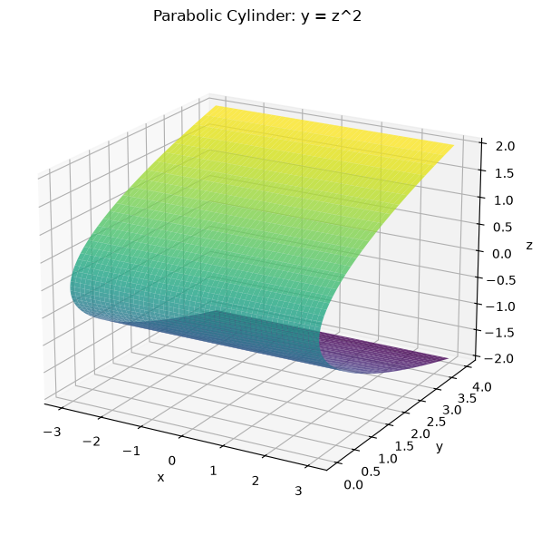
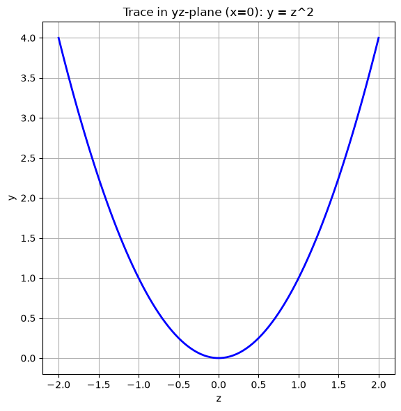
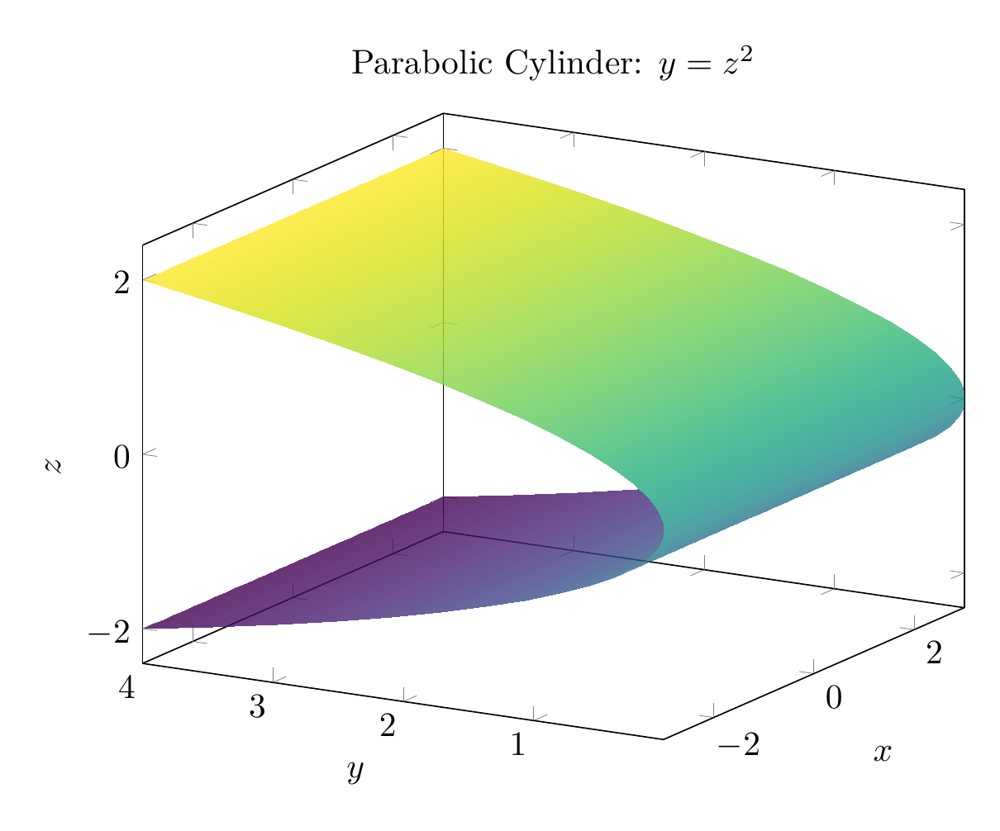
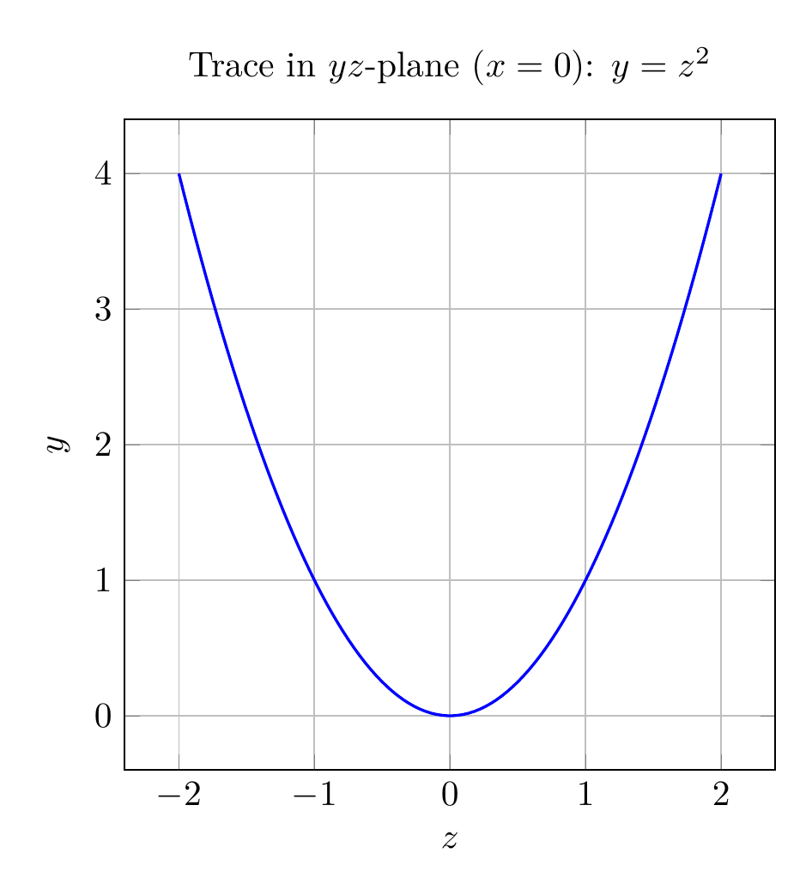

Path: mcma-Qwen3.5-397B-A17B/calculus-12.6.6/chat_20260823_213316_779385_utc_0800
Problem
Please solve the math problem in the image.

End of problem
Answer
# Solution: Describe and Sketch the Surface $y = z^2$
## Analysis
The equation $y = z^2$ describes a **parabolic cylinder** in three-dimensional space.
### Key Characteristics:
1. **Missing Variable**: The equation does not contain the variable $x$. This means that $x$ can take any real value, and the surface extends infinitely in both directions along the $x$-axis.
2. **Cross-Section**: In any plane where $x = c$ (constant), the trace is the parabola $y = z^2$ in the $yz$-plane. This parabola:
- Opens in the positive $y$-direction
- Has its vertex at the origin $(0, 0, 0)$
- Is symmetric about the $y$-axis (in the $yz$-plane)
3. **Surface Type**: Since the same parabolic cross-section is repeated for all values of $x$, this creates a **cylindrical surface** called a **parabolic cylinder**.
### Geometric Description:
The surface consists of all points $(x, y, z)$ where $y$ equals the square of $z$, regardless of the value of $x$. Imagine taking the parabola $y = z^2$ in the $yz$-plane and extruding it infinitely in both directions along the $x$-axis.
## Visualizations
The plots show:
- **3D View**: The parabolic cylinder extending along the $x$-axis
- **2D Trace**: The parabola $y = z^2$ in the $yz$-plane (when $x = 0$)
$\\boxed{\text{Parabolic cylinder extending along the } x\text{-axis}}$
---




\documentclass[border=10pt]{standalone}
\usepackage{pgfplots}
\pgfplotsset{compat=1.18}
\usepgfplotslibrary{colormaps}
\begin{document}
\begin{tikzpicture}
\begin{axis}[
width=10cm,
height=8cm,
xlabel=$x$,
ylabel=$y$,
zlabel=$z$,
title={Parabolic Cylinder: $y = z^2$},
view={-60}{20},
colormap/viridis,
grid=none,
samples=30,
domain=-3:3,
y domain=-2:2,
]
\addplot3[surf, shader=interp, opacity=0.8] ({x}, {y^2}, {y});
\end{axis}
\end{tikzpicture}
\end{document}

\documentclass[border=10pt]{standalone}
\usepackage{pgfplots}
\pgfplotsset{compat=1.18}
\begin{document}
\begin{tikzpicture}
\begin{axis}[
width=8cm,
height=8cm,
xlabel=$z$,
ylabel=$y$,
title={Trace in $yz$-plane ($x=0$): $y = z^2$},
grid=both,
axis equal image,
domain=-2:2,
samples=100,
]
\addplot[blue, thick] {x^2};
\end{axis}
\end{tikzpicture}
\end{document}

End of answer